НАУЧНЫЙ СЕКТОР
Ежегодно команда Научного сектора проводит для студентов УлГТУ различные мероприятия: интеллектуальные игры, мастер-классы, конкурсы, мероприятия на логику. Также мы участвуем в региональных конкурсах, становимся соорганизаторами мероприятий университета и не только. А вот и фото с прошедших мероприятий :)
 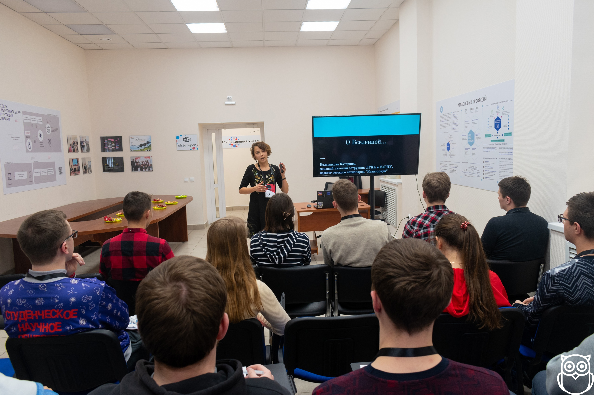
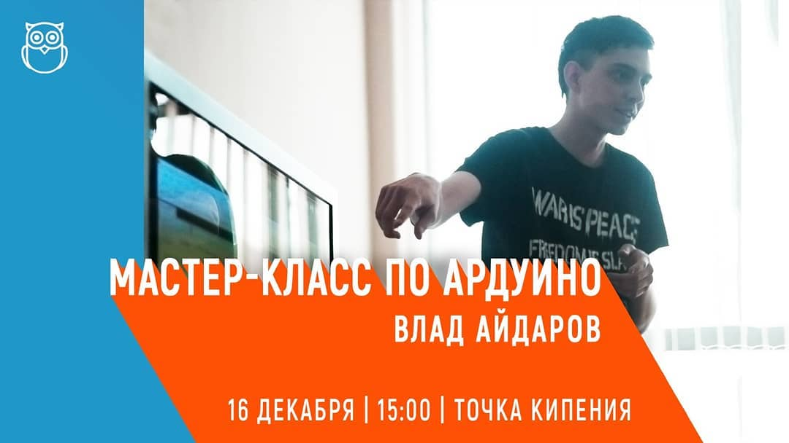
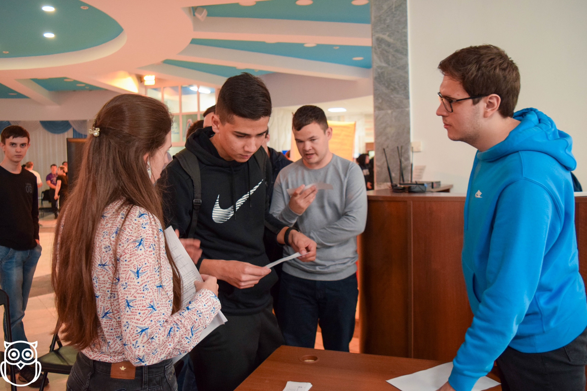
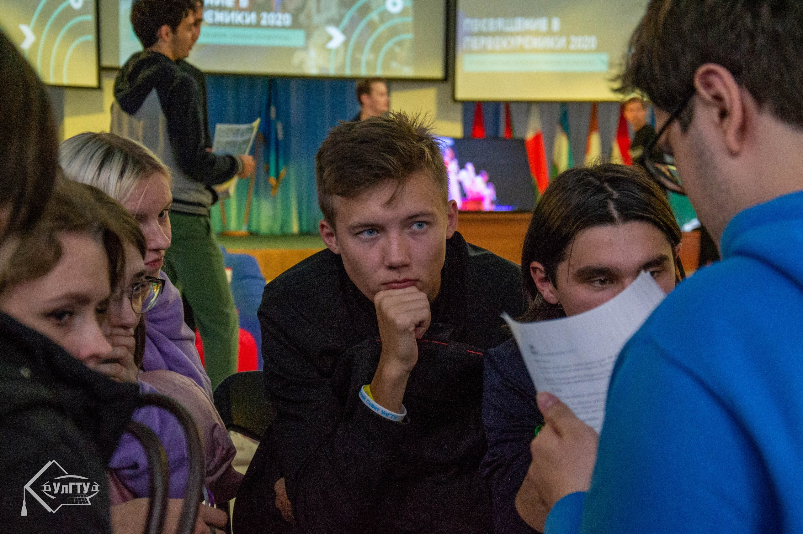
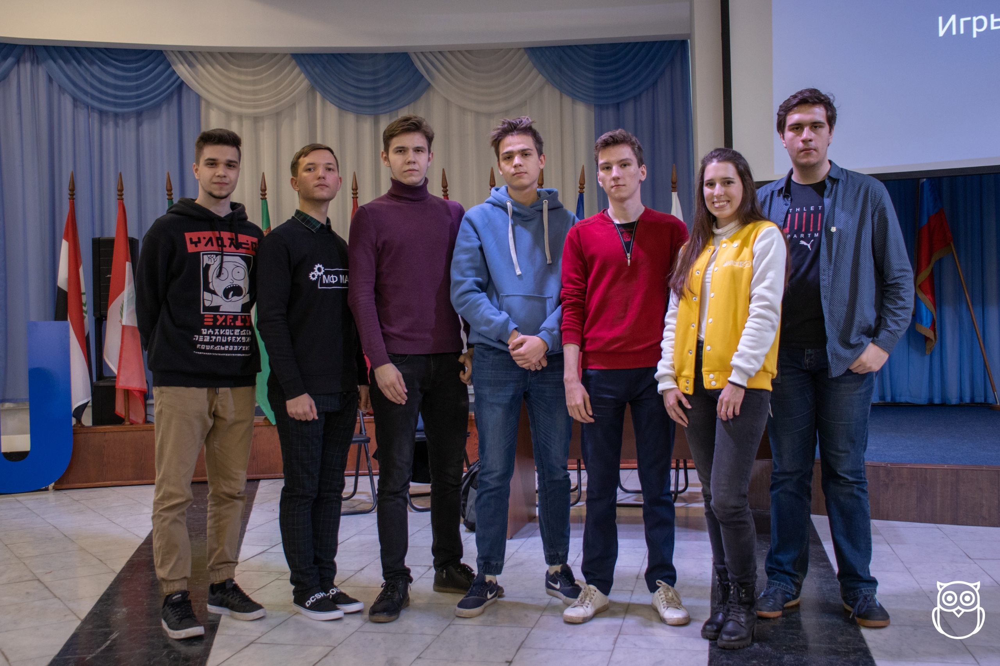
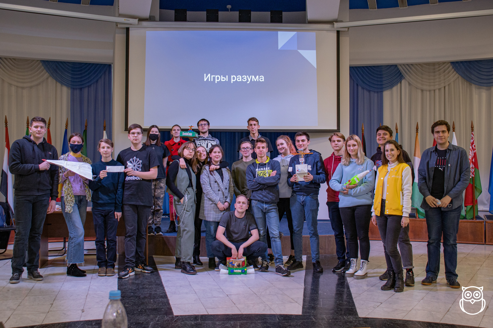
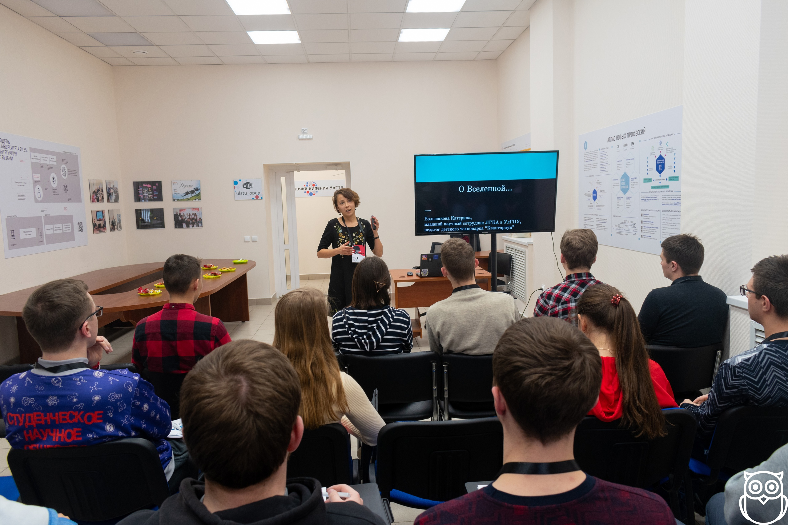
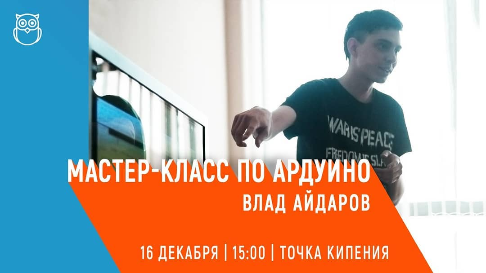
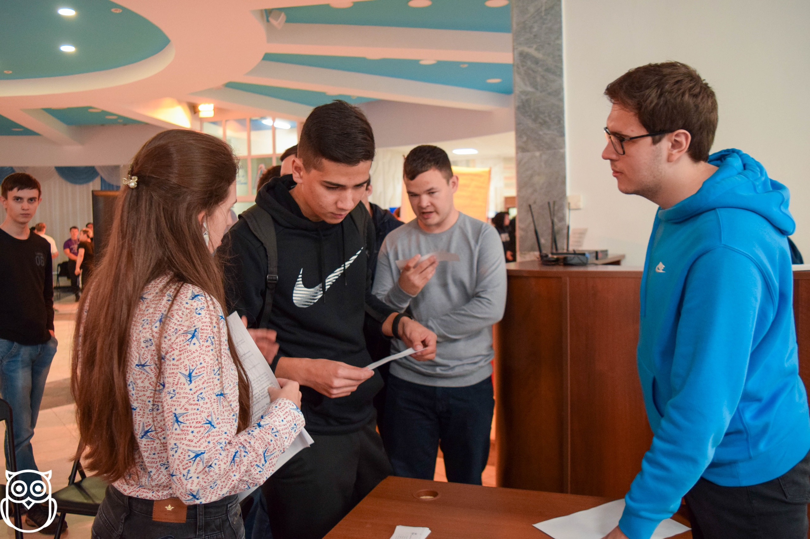
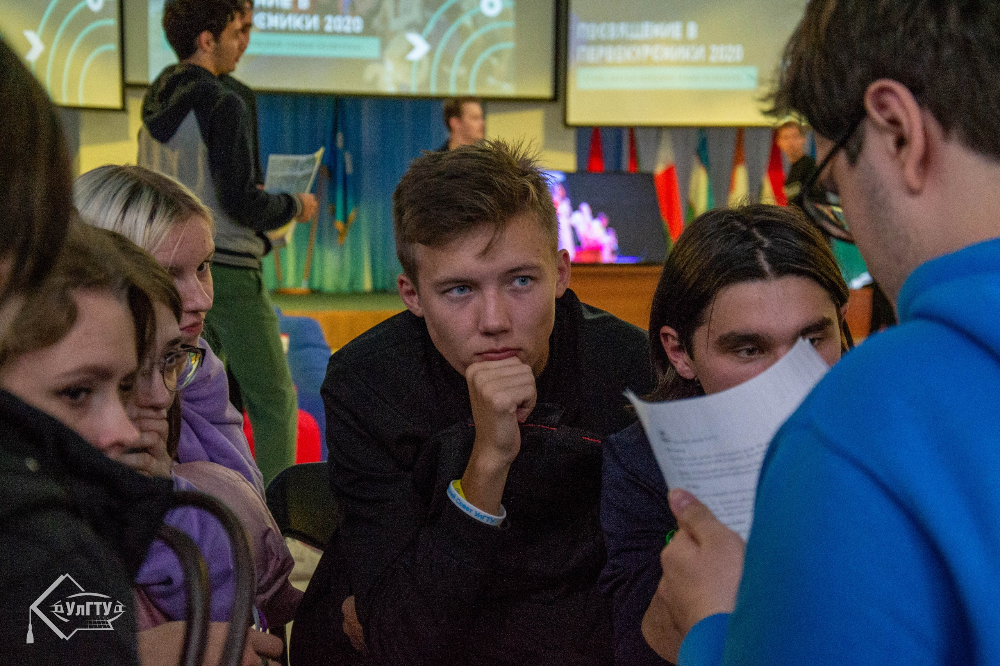
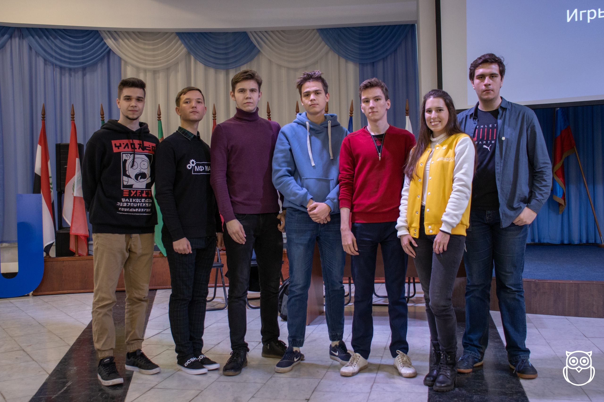
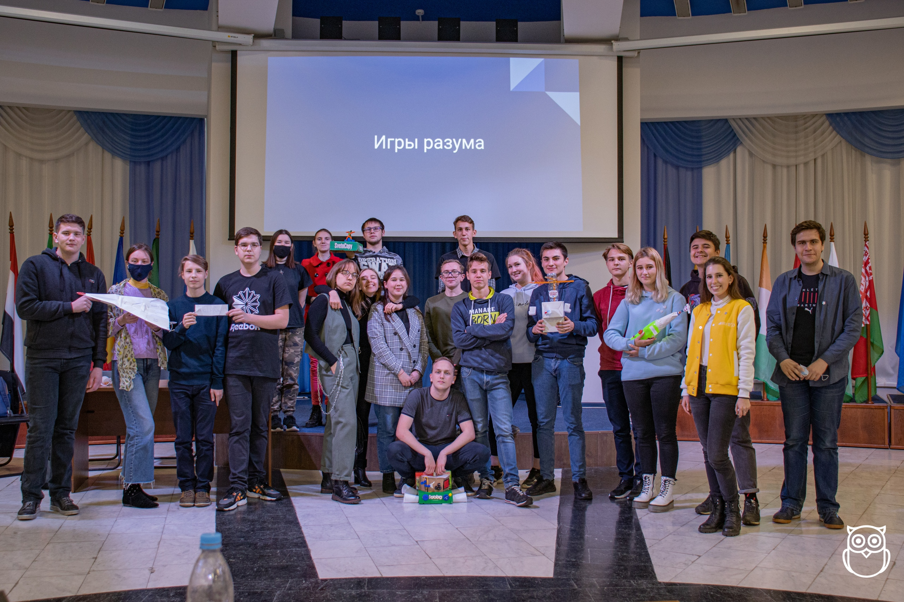
В команде Научного сектора состоят ребята разных факультетов и специальностей! Познакомимся с некоторыми из них поближе!
 Алеся Демянчук, ФИСТ, 2 курс - активист Научного сектора, сейчас является его
руководителем.
Алеся Демянчук, ФИСТ, 2 курс - активист Научного сектора, сейчас является его
руководителем.
Олег Балакин, СФ, 1 курс- активист Научного сектора, генератор идей, основатель группы вконтакте. 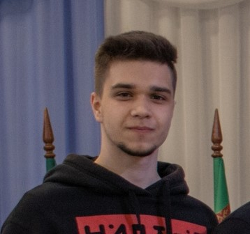
Артём Корчакин, МФ, 2 курс - активист Научного сектора, великолепный ведущий и автор постов в вк.
Юлия Андрианова, ИЭФ, 1 курс - активист Научного сектора, занимается инстаграм, оформлением. 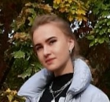
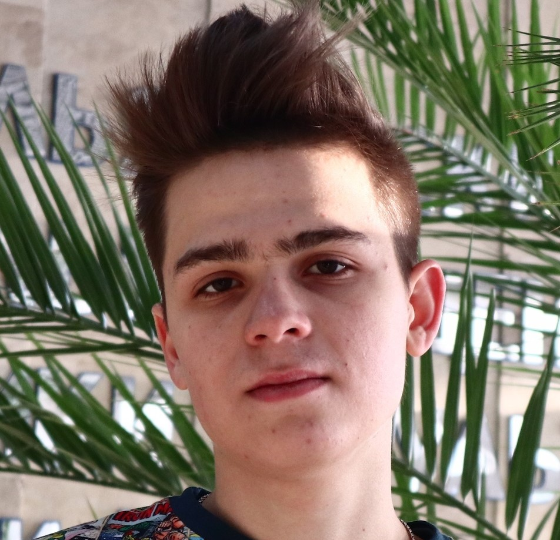 Вадим Сосновский, ФИСТ, 3 курс - активист Научного сектора, организатор многих мероприятий.